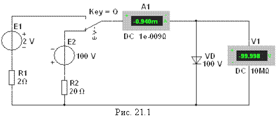

1.
ПОЛУПРОВОДНИКОВЫЕ ДИОДЫ
Полупроводниковый диод содержит один р-п-переход и имеет два вывода: вывод А (анод) от р-области и К (катод) от п-области. Наиболее распространены и обширны две группы германиевых и кремниевых диодов – выпрямительные и импульсные, называемые в некоторых справочниках универсальными.
Выпрямительные диоды, в которых используется основное свойство р-п-перехода
– его односторонняя электропроводность, применяют главным образом для
выпрямления переменного тока в диапазоне частот от 50 Гц до 100 кГц. Импульсные диоды применяют в схемах
электронных устройств, работающих в импульсных режимах.

Функционирование
диода в электрической схеме
определяется его вольтамперной характеристикой (ВАХ). Прямую ветвь ВАХ Iпр(Uпр) снимают с помощью схемы (рис. 21.1) при
верхнем положении переключателя Q. Прямой ток через диод VD задаётся источником постоянного напряжения E1.
Ступенчато
изменяя ЭДС Е1 источника Е1,
измеряют (с помощью амперметра А1)
прямой ток Iпр
£ Iпр.max и (с помощью вольтметра V1) прямое напряжение Uпр
диода для ряда значений ЭДС. Обратную ветвь ВАХ Iобр(Uобр) снимают с помощью той же схемы (рис. 21.1), установив переключатель Q в нижнее положение.
Ступенчато изменяя выходное напряжение источника напряжения E2 от 0 до Uобр.max, измеряют обратный
ток Iобр диода для ряда значений обратного напряжения Uобр.
Анализ типовых ВАХ диодов (рис. 21.2) показывает, что прямое напряжение
Uпр на германиевом диоде почти в два раза меньше,
чем на кремниевом, при одинаковых значениях прямого тока Iпр, а обратный ток Iобр кремниевого диода значительно меньше обратного тока германиевого диода
при одинаковых обратных напряжениях. К тому же, германиевый диод начинает проводить ток при ничтожно малом
прямом напряжении Uпр,
а кремниевый – только при Uпр
= 0,4…0,5 В.

Исходя из этих свойств,
германиевые диоды применяют как в схемах выпрямления переменного тока, так и
для обработки сигналов малой амплитуды (до 0,3 В), а кремниевые, наиболее
распространённые – как в схемах выпрямления, так и в схемах устройств, в
которых обратный ток недопустим или должен быть ничтожно мал. Кроме того, кремниевые
диоды сохраняют работоспособность до температуры окружающей среды 125…150 °С,
тогда как германиевые могут работать только до 70 °С.
Основные
параметры выпрямительного диода приводятся в его техническом паспорте и сравниваются
(для принятия решения его использования в схеме электронного устройства) с
параметрами, определёнными по снятым характеристикам:
- прямое
постоянное напряжение Uпр
при определённом для каждого диода прямом постоянном токе Iпр;
- обратный
ток Iобр при определённом обратном постоянном напряжении Uобр;
- максимально допустимое обратное напряжение Uобр.max. Превышение Uобр.max переводит
диод в режим пробоя. Различают электрический и тепловой пробои р-п-перехода. Электрический пробой может
быть лавинным или туннельным и не сопровождается разрушением р-п-перехода. Тепловой пробой, как
правило, приводит к разрушению р-п-перехода
и выводу диода из строя;
- максимально допустимый прямой ток Iпр.max, обычно
определяемый как средний за период прямой ток в схеме однополупериодного выпрямителя.